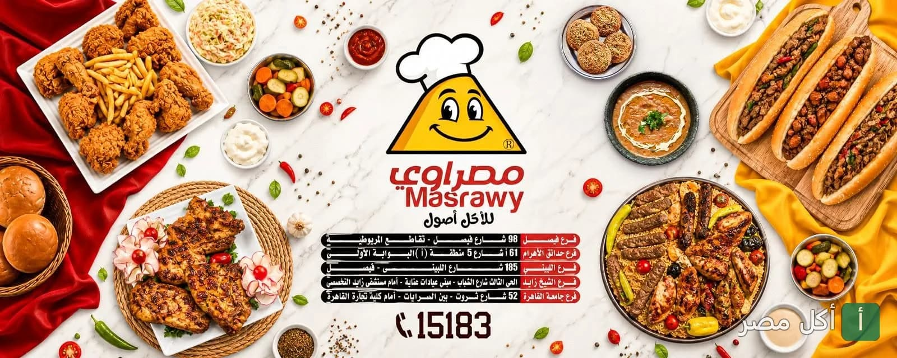

1/4 فرخة ورك
أرز - سلطة وخبز
100 جنيه
أكل شرقي ومصري: مشويات، كريب، شاورما، بروست ووجبات عائلية في فيصل. اختار طلبك من المنيو وكلمنا.

الأسعار بالجنيه المصري من صفحة أكل مصر (آخر تحديث معلن: ٩ نوفمبر ٢٠٢٦). أكد السعر مع المطعم عند الطلب.
أرز - سلطة وخبز
100 جنيه
أرز بسمتي - سلطة وخبز
100 جنيه
أرز - سلطة وخبز
160 جنيه
خضار - أرز - سلطة وخبز
200 جنيه
مكرونة بشاميل - سلطة وخبز
200 جنيه
أرز بسمتي - سلطة وخبز
220 جنيه
مكرونة فرن أو أرز بسمتي - سلطة وخبز
220 جنيه
أرز - سلطة وخبز
250 جنيه
أرز بالخلطة - بوم فريت - سلطة وخبز
260 جنيه
أرز بالخلطة - سلطة وخبز
300 جنيه
مكرونة بشاميل - سلطة وخبز
300 جنيه
4 قطع صدور فراخ - خضار سوتيه - ميكس سلاط
160 جنيه
ربع فرخة - محشي مشكل - ستيك لحم - سمبوسك جبنة - سلطة وخبز
150 جنيه
2 كباب - 2 كفتة - 3 شيش طاووق - أرز بسمتي - سلطة وخبز
280 جنيه
أرز بالخلطة - 3 قطع شيش طاووق - 2 كفتة - سمبوسك (لحم - جبنة) - سلطة - خبز
200 جنيه
450 جنيه
نصف فرخة - كفتة مشوية - ممبار - محشي مشكل - سلطة وخبز
350 جنيه
110 جنيه
100 جنيه
100 جنيه
100 جنيه
100 جنيه
160 جنيه
100 جنيه
100 جنيه
160 جنيه
200 جنيه
65 جنيه
90 جنيه
وسط 90 جنيهكبير 140 جنيه
وسط 100 جنيهكبير 150 جنيه
وسط 120 جنيهكبير 170 جنيه
وسط 120 جنيهكبير 170 جنيه
وسط 130 جنيهكبير 180 جنيه
وسط 140 جنيهكبير 190 جنيه
وسط 150 جنيهكبير 200 جنيه
وسط 150 جنيهكبير 200 جنيه
وسط 150 جنيهكبير 200 جنيه
وسط 150 جنيهكبير 200 جنيه
20 جنيه
30 جنيه
40 جنيه
50 جنيه
70 جنيه
15 جنيه
20 جنيه
صغير 15 جنيهوسط 20 جنيهكبير 35 جنيه
صغير 15 جنيهوسط 25 جنيهكبير 45 جنيه
صغير 15 جنيهوسط 25 جنيهكبير 45 جنيه
صغير 20 جنيهوسط 30 جنيهكبير 55 جنيه
320 جنيه
340 جنيه
360 جنيه
720 جنيه
580 جنيه
1100 جنيه
880 جنيه
1500 جنيه
1500 جنيه
1200 جنيه
600 جنيه
660 جنيه
30 جنيه
50 جنيه
80 جنيه
30 جنيه
60 جنيه
50 جنيه
60 جنيه
50 جنيه
60 جنيه
70 جنيه
80 جنيه
30 جنيه
40 جنيه
240 جنيه
240 جنيه
60 جنيه
240 جنيه
620 جنيه
60 جنيه
225 جنيه
250 جنيه
300 جنيه
200 جنيه
380 جنيه
60 جنيه
50 جنيه
75 جنيه
80 جنيه
90 جنيه
100 جنيه
120 جنيه
كبير 55 جنيه
كبير 65 جنيه
كبير 80 جنيه
10 جنيه
15 جنيه
30 جنيه
60 جنيه
60 جنيه
شامي 11 جنيهوسط 15 جنيهكبيرة 20 جنيهجامبو 40 جنيه
شامي 15 جنيهوسط 20 جنيهكبيرة 40 جنيهجامبو 65 جنيه
شامي 15 جنيهوسط 20 جنيهكبيرة 35 جنيهجامبو 60 جنيه
شامي 15 جنيهوسط 20 جنيهكبيرة 35 جنيهجامبو 60 جنيه
شامي 25 جنيهوسط 30 جنيهكبيرة 35 جنيهجامبو 70 جنيه
وسط 20 جنيهكبيرة 60 جنيه
وسط 25 جنيه
وسط 35 جنيه
شامي 15 جنيهوسط 20 جنيهكبيرة 40 جنيهجامبو 60 جنيه
شامي 15 جنيهوسط 20 جنيهكبيرة 40 جنيهجامبو 60 جنيه
شامي 15 جنيهوسط 20 جنيهكبيرة 40 جنيهجامبو 60 جنيه
شامي 15 جنيهوسط 20 جنيهكبيرة 40 جنيهجامبو 60 جنيه
شامي 15 جنيهوسط 20 جنيهكبيرة 40 جنيهجامبو 60 جنيه
وسط 25 جنيه
وسط 30 جنيه
كبيرة 10 جنيه
كبيرة 15 جنيهجامبو 45 جنيه
كبيرة 35 جنيهجامبو 55 جنيه
كبيرة 20 جنيهجامبو 50 جنيه
1 بيضة 10 جنيه
1 بيضة 25 جنيه2 بيضة 40 جنيه
سادة 5 جنيه
سادة 7 جنيه
سادة 7 جنيه
سادة 15 جنيه
سادة 20 جنيه
سادة 30 جنيه
شامي 18 جنيهوسط 25 جنيهطلب وسط 30 جنيهكبير 55 جنيه
شامي 15 جنيهوسط 20 جنيهطلب وسط 25 جنيهكبير 35 جنيه
شامي 20 جنيهوسط 30 جنيهطلب وسط 30 جنيهكبير 40 جنيه
شامي 25 جنيهوسط 40 جنيهطلب وسط 35 جنيهكبير 55 جنيه
شامي 25 جنيهوسط 35 جنيهكبير 50 جنيه
علبة فول محوج وسط - 2 قرص فلافل - بيضة مسلوقة - علبة شعبيات من (جبنة أو مسقعة أو بطاطس بورية) - علبة مخلل - 6 خبز
60 جنيه
فول (حار - زبدة - إسكندراني - صلصة) بطاطس جمبري - 1 قرص طعمية كيري او 2 قرص إسكندراني - 2 قطعة جبنة مقلية - بيضة بسطرمة - مخلل - 6 خبز
120 جنيه
علبة فول كبيرة حسب الاختيار (ذرة - حار - صلصة - إسكندراني) - علبة شعبيات وسط (مهروسة أو جبنة أو مسقعة) - 6 قرص طعمية - 3 بيضة مسلوقة - علبة مخلل وسط - 12 خبز
140 جنيه
بطاطس - كول سلو ص - 2 كيزر
100 جنيه
ارز بسمتي - بطاطس ص - كول سلو ص - 2 كيزر
200 جنيه
بطاطس - كول سلو وسط - 3 كيزر
240 جنيه
2 كول سلو وسط - 2 باكيت بطاطس وسط - 6 كيزر
450 جنيه
80 جنيه
100 جنيه
3 قطع استربس - بطاطس - تومية - 1 كيزر
100 جنيه
12 قطعة بروست - 2 كول سلو وسط - 2 تومية وسط - 2 باكيت بطاطس وسط - 8 كيزر
599 جنيه
M 140 جنيهL 199 جنيه
وسط 150 جنيهفرنساوي/صاج 290 جنيه
وسط 100 جنيهفرنساوي/صاج 200 جنيه
كيزر 50 جنيهوسط 70 جنيهفرنساوي/صاج 90 جنيه
وسط 130 جنيه
وسط 160 جنيه
كيزر 60 جنيهوسط 90 جنيهفرنساوي/صاج 140 جنيه
كيزر 90 جنيهوسط 120 جنيهفرنساوي/صاج 170 جنيه
وسط 190 جنيه
وسط 250 جنيه
فرخة شيش - 1/2 كيلو كفتة - كيلو أرز بسمتي - 3 أنواع سلطة وسط - 9 خبز
750 جنيه
1/2 كيلو شيش طاووق - 1/2 كيلو كفتة - 1/2 كيلو فراخ بانيه - 1/2 كيلو ورق عنب - 1/2 كيلو ممبار - 1/2 كيلو بطاطس محمرة - 3 أنواع سلطة وسط - 12 خبز
999 جنيه
6 قطع بانيه - 6 كفتة - 6 شيش طاووق - 6 ممبار - 6 محشي باذنجان - 6 محشي كوسة - 6 محشي فلفل - 6 ورق عنب - 3 سمبوسك جبنة - بطاطس محمرة - سلطة خضراء - طحينة - كول سلو - 6 خبز
650 جنيه
2/1 كيلو شيش طاووق - 2 حمام محشي - 2/1 كيلو كفتة - 4/1 كيلو ورق عنب - 2/1 كيلو أرز بسمتي - 6 سلطة وسط - 10 خبز
1200 جنيه
1 فرخة شيش - 2/1 كيلو شيش طاووق - 4 حمام محشي - 2/1 كيلو كفتة - 2/1 كيلو ممبار - 2/1 كيلو طرب - 2/1 كيلو ورق عنب - كيلو ونصف أرز بسمتي - 2 ملوخية - 8 سلطة وسط - 25 خبز
2500 جنيه
1 فرخة مشوية - 2/1 كيلو كفتة - 2/1 كيلو ممبار - 1/3 كيلو طرب - كيلو أرز بسمتي - 1 ملوخية - 5 سلطة وسط - 12 خبز
1500 جنيه
6 كفتة - 3 طرب - 6 كباب - 3 ريش - 6 سجق - 9 شيش طاووق - سلطة - خبز
1300 جنيه
الأصناف والأسعار من صفحة أكل مصر المنشورة. أكد تفاصيل طلبك والسعر مع المطعم عند الاتصال.